CYSTS LIST
- Alexandrium catenella
- Alexandrium kutnerae
- Alexandrium margalefi
- Alexandrium minutum
- Alexandrium peruvianum
- Alexandrium pseudogoniaulax
- Alexandrium tamarense
- Alexandrium taylori
- Alexandrium spp.
- Archaeperidinium bailongense, cyst of
- Archaeperidinium constrictum, cyst of
- Archaeperidinium minutum, cyst of
- Archaeperidinium monospinum, cyst of
- Archaeperidinium saanichi, cyst of
- Archaeperidinium sp., cyst of
- Ataxiodinium choane
- Ataxiodinium confussum
- Ataxiodinium zevenboomii
- Ataxiodinium sp.
- Biecheleria baltica
- Biecheleria cincta
- Biecheleria sp.
- Bitectatodinium spongium
- Bitectatodinium tepikiense
- Bitectatodinium sp.
- Brigantedinium assymmetricum
- Brigantedinium auranteum
- Brigantedinium cariacoense
- Brigantedinium majusculum
- Brigantedinium simplex
- Brigantedinium sp.
- Caspidinium rugosum
- Cryodinium matsuokai
- Cryodinium sp.
- Cryodinium meridianum
- Dalella chathamensis
- Diplopelta symmetrica, cyst of
- Dubridinium caperatum, cyst of
- Dubridinium cassiculum, cyst of
- Dubridinium cavatum, cyst of
- Dubridinium ulsterum, cyst of
- Dubridinium spp., cyst of
- Echinidinium aculeatum
- Echinidinium bispiniformum
- Echinidinium delicatum
- Echinidinium karaense
- Echinidinium granulatum
- Echinidinium sleipnerensis
- Echinidinium transparantum
- Echinidinium zonneveldiae
- Gymnodinium catenatum, cyst of
- Gymnodinium inusitatum, cyst of
- Gymnodinium microreticulatum, cyst of
- Gymnodinium nolerii, cyst of
- Gymnodinium trapeziforme, cyst of
- Impagidinium aculeatum
- Impagidinium caspienense
- Impagidinium pallidum
- Impagidinium paradoxum
- Impagidinium patulum
- Impagidinium plicatum
- Impagidinium sphaericum
- Impagidinium strialatum
- Impagidinium variaseptum
- Impagidinium velorum
- Islandinium brevispinosum
- Islandinium? cezare
- Islandinium minutum
- Leipokatium invisitatum
- Lejeunecysta acuminate
- Lejeunecysta adeliensis
- Lejeunecysta attenuata
- Lejeunecysta beinenensis
- Lejeunecysta catomus
- Lejeunecysta communis
- Lejeunecysta cowiei
- Lejeunecysta epidoma
- Lejeunecysta fallax
- Lejeunecysta globosa
- Lejeunecysta granosa
- Lejeunecysta hyalina
- Lejeunecysta katatonos
- Lejeunecysta lata
- Lejeunecysta marieae
- Lejeunecysta oliva
- Lejeunecysta paratenella
- Lejeunecysta pulchra
- Lejeunecysta rotunda
- Lejeunecysta sabrina
- Lejeunecysta sp.
- Lingulodinium machaerophorum
- Nematosphaeropsis labyrinthus
- Nematosphaeropsis lemniscata
- Nematosphaeropsis rigida
- Nematosphaeropsis scala
- Nematosphaeropsis spp.
- Nia acanthocysta
- Oblea acathocysta, cyst of
- Operculodinium aguinawense
- Operculodinium centrocarpum
- Operculodinium israelianum
- Operculodinium janduchenei
- Operculodinium longispinigerum
- Operculodinium piaseckii
- Operculodinium tegillatum
- Operculodinium microtriainum
- Operculodinium sp.
- Pentapharsodinium dalei
- Peridinium ponticum
- Polykrikos kofoidii, cyst of
- Polykrikos schwartzii, cyst of
- Polykrikos hatmannii, cyst of
- Polykrikos quadratus, cyst of
- Polykrikos sp., cyst of
- Polysphaeridium zoharyi
- Protoperidinium americanum, cyst of
- Protoperidinium conicoides, cyst of
- Protoperidinium fukuyoi, cyst of
- Protoperidinium lewisiae, cyst of
- Protoperidinium monospinum, cyst of
- Protoperidinium parthenopes, cyst of
- Protoperidinium thulensense, cyst of
- Protoperidinium tricingulatum, cyst of
- Pyxidinopsis psilata
- Pyxidinopsis reticulata
- Qia_lebouriae
- Quinquecuspis concreta
- Scrippsiella acuminata
- Scrippsiella crystallina
- Scrippsiella erinaceus
- Scrippsiella spinifera
- Scrippsiella triffida
- Scrippsiella trochoidea
- Selenopemphix antarctica
- Selenopemphix armageddonensis
- Selenopemphix brevispinosum
- Selenopemphix brinkhuisii
- Selenopemphix conspicua
- Selenopemphix coronata
- Selenopemphix crenata
- Selenopemphix dionaeacysta
- Selenopemphix islandensis
- Selenopemphix nephroides
- Selenopemphix quanta
- Selenopemphix tholus
- Selenopemphix undulata
- Selenopemphix sp.
- Spiniferites alaskensis
- Spiniferites asperulus
- Spiniferites belerius
- Spiniferites bentorii
- Spiniferites cruciformis
- Spiniferites delicatus
- Spiniferites elongatus
- Spiniferites frigidus
- Spiniferites hainanensis
- Spiniferites hyperacanthus
- Spiniferites lazus
- Spiniferites ludhamensis
- Spiniferites membranaceus
- Spiniferites mirabilis
- Spiniferites multisphaerus
- Spiniferites pachydermus
- Spiniferites pacificus
- Spiniferites spinatus
- Spiniferites splendidus
- Spiniferites ramosus
- Stelladinium abei
- Stelladinium bifurcatum
- Stelladinium denticulatum
- Stelladinium reidii
- Stelladinium robustum
- Stelladinium stellatum
- Stelladinium spp.
- Tectatodinium pellitum
- Trinovantedinium applanatum
- Trinovantedinium ferugnomatum
- Trinovantedinium glorianum
- Trinovantedinium harpagonium
- Trinovantedinium pallidifulvum
- Trinovantedinium variabile
- Trinovantedinium sp.
- Tuberculodinium vancampoae
- Votadinium bengalensis
- Votadinium calvum
- Votadinium concavum
- Votadinium elongatum
- Votadinium nanhaiense
- Votadinium pontifossatum
- Votadinium psilodora
- Votadinium reidii
- Votadinium rhomboideum
- Votadinium spinosum
- Xandarodinium xanthum
SCRIPPSIELLA TRIFFIDA
IMAGES:
| 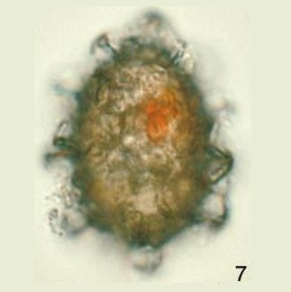1 | 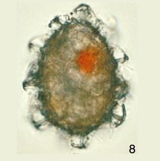2 | 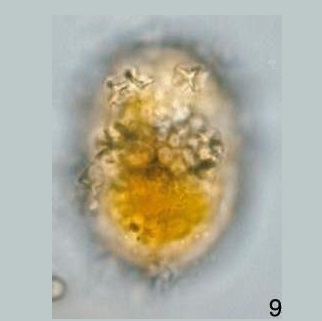3 |
| 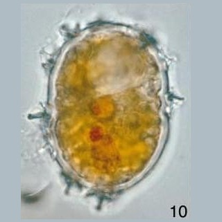4 | 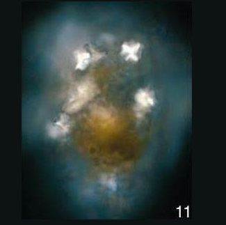5 | 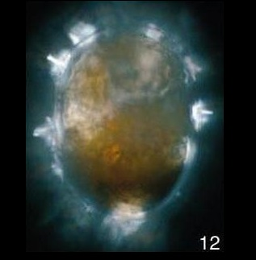6 |
| 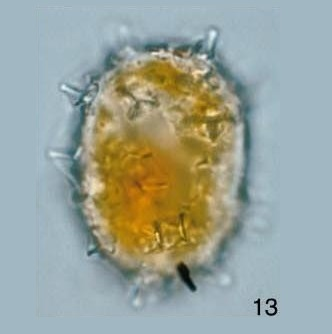7 | 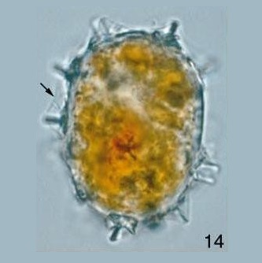8 | 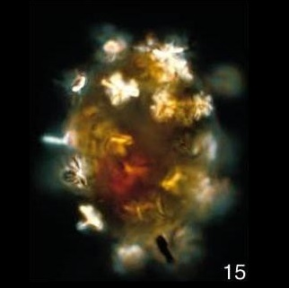9 |
| 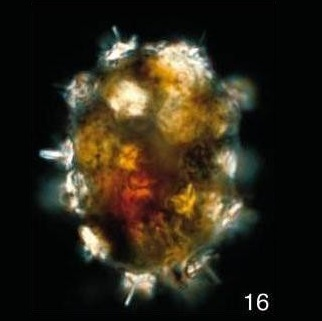10 | 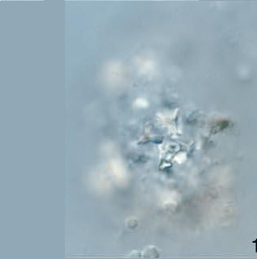11 | 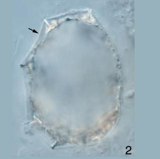12 |
| 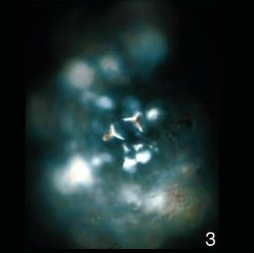13 | 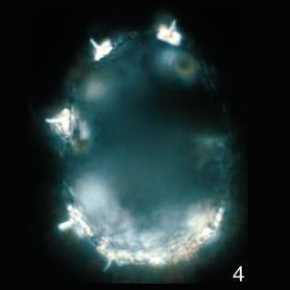14 | 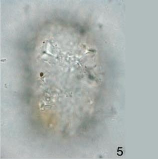15 |
| 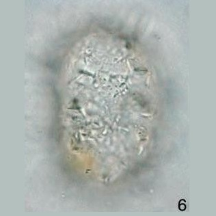16 |  17 17 |
 18 18 |
| 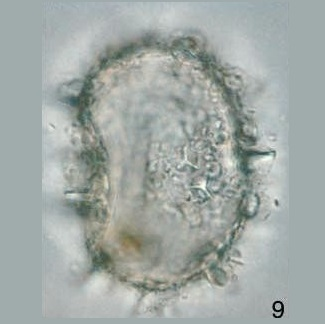19 | 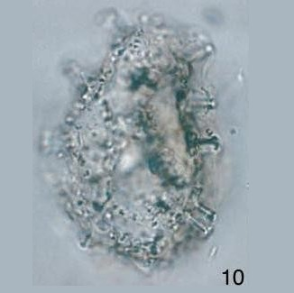20 | 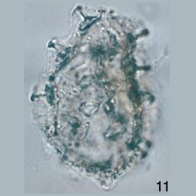21 |
| 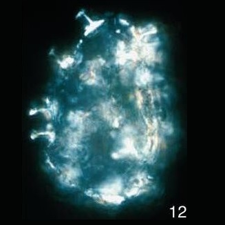22 | 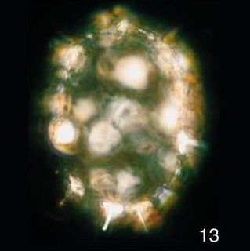23 | 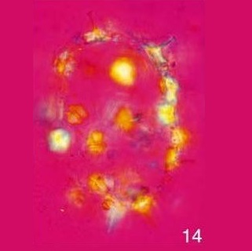24 |
| 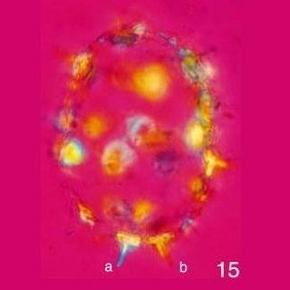25 | 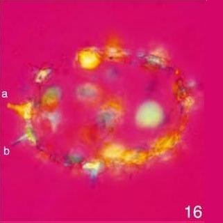26 | 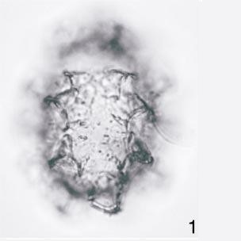27 |
| 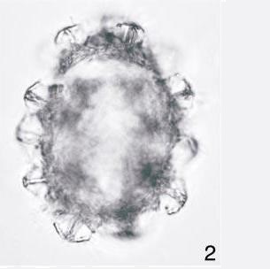28 |  29 29 |
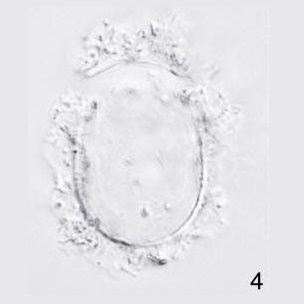30 |
| 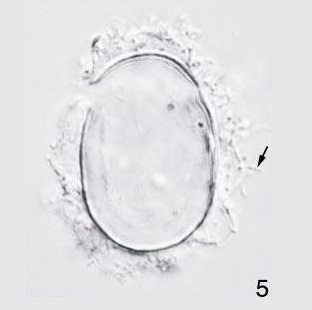31 | 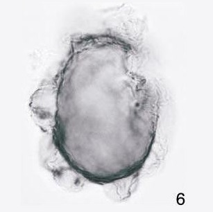32 | 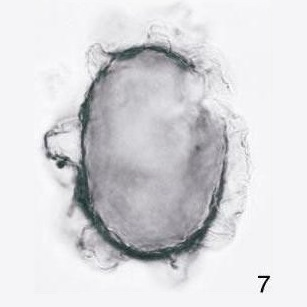33 |
| 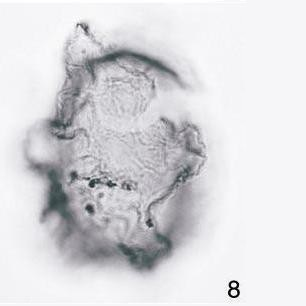34 |  35 35 |
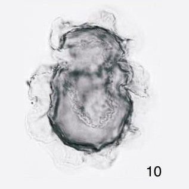36 |
| 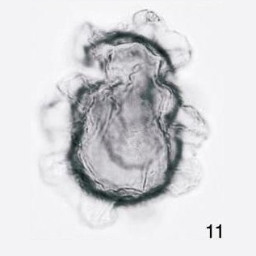37 | 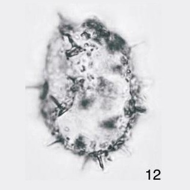38 |  39 39 |
| 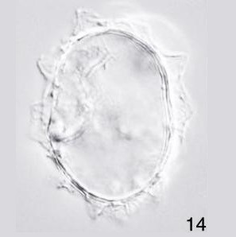40 | 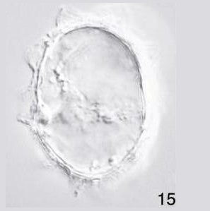41 | 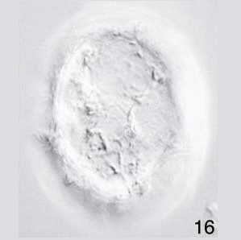42 |
IMAGES REFERENCE:
1. Scrippsiella triffida. Micrographs are in bright field. All cyst in equatorial view. Living cyst from culture; in water mount. Note trifurcate, recurved, calcareous processes that separate the two organic wall layers, an ovoidal inner layer and undulating outer layer; and centrally positioned red body. Upper focus. CBD:36um.; length including outer wall layer, 46 um. (Head et al., 2006 - Figure 1-7).
2. Scrippsiella triffida. Micrographs are in bright field. All cyst in equatorial view. Living cyst from culture; in water mount. Note trifurcate, recurved, calcareous processes that separate the two organic wall layers, an ovoidal inner layer and undulating outer layer; and centrally positioned red body. Mid focus. CBD:36um.; length including outer wall layer, 46 um. (Head et al., 2006 - Figure 1-8).
3. Scrippsiella triffida. Micrographs are in bright field. All cyst in equatorial view. Living cyst from culture mounted in glicerine jelly. Note calcareous processes with blunt or weakly trifurcte tips, arising from discrete platforms often with ridges radiating from process base and forming a Y-shaped pattern; calcified parts of the cysts show as brightly iluminated areas (owing to strong birefringence) in cross.polarized. Upper and midfocus, respectively in bright field and cross polarized light, CBD: 33 um., length including outer wall layer, 38 um. slide 3 W33/4. (Head et al., 2006 - Figure 1-9).
4. Scrippsiella triffida. Micrographs are in bright field. All cyst in equatorial view. Living cyst from culture mounted in glicerine jelly. Note calcareous processes with blunt or weakly trifurcte tips, arising from discrete platforms often with ridges radiating from process base and forming a Y-shaped pattern; calcified parts of the cysts show as brightly iluminated areas (owing to strong birefringence) in cross.polarized. Upper and midfocus, respectively in bright field and cross polarized light, CBD: 33 um., length including outer wall layer, 38 um. slide 3 W33/4. (Head et al., 2006 - Figure 1-10).
5. Scrippsiella triffida. Cross-polarized light. All cyst in equatorial view. Living cyst from culture mounted in glicerine jelly. Note calcareous processes with blunt or weakly trifurcte tips, arising from discrete platforms often with ridges radiating from process base and forming a Y-shaped pattern; calcified parts of the cysts show as brightly iluminated areas (owing to strong birefringence) in cross.polarized. Upper and midfocus, respectively in bright field and cross polarized light, CBD: 33 um., length including outer wall layer, 38 um. slide 3 W33/4. (Head et al., 2006 - Figure 1-11).
6. Scrippsiella triffida. Cross-polarized light. All cyst in equatorial view. Living cyst from culture mounted in glicerine jelly. Note calcareous processes with blunt or weakly trifurcte tips, arising from discrete platforms often with ridges radiating from process base and forming a Y-shaped pattern; calcified parts of the cysts show as brightly iluminated areas (owing to strong birefringence) in cross.polarized. Upper and midfocus, respectively in bright field and cross polarized light, CBD: 33 um., length including outer wall layer, 38 um. slide 3 W33/4. (Head et al., 2006 - Figure 1-12).
7. Scrippsiella triffida. Micrographs are in bright field. All cyst in equatorial view. Living cyst from culture mounted in glicerine jelly. Note calcareous processes with blunt or weakly trifurcte tips, arising from discrete platforms often with ridges radiating from process base and forming a Y-shaped pattern; calcified parts of the cysts show as brightly iluminated areas (owing to strong birefringence) in cross.polarized. Upper and midfocus, respectively, in bright field and cross polarized light. CBD: 32 um., length including outer wall layer, 36 um., slide 3, T25/1. (Head et al., 2006 - Figure 1-13).
8. Scrippsiella triffida. Micrographs are in bright field. All cyst in equatorial view. Living cyst from culture mounted in glicerine jelly. Note calcareous processes with blunt or weakly trifurcte tips, arising from discrete platforms often with ridges radiating from process base and forming a Y-shaped pattern; calcified parts of the cysts show as brightly iluminated areas (owing to strong birefringence) in cross.polarized. Upper and midfocus, respectively, in bright field and cross polarized light. CBD: 32 um., length including outer wall layer, 36 um., slide 3, T25/1. (Head et al., 2006 - Figure 1-14).
9. Scrippsiella triffida. Cross-polarized light. All cyst in equatorial view. Living cyst from culture mounted in glicerine jelly. Note calcareous processes with blunt or weakly trifurcte tips, arising from discrete platforms often with ridges radiating from process base and forming a Y-shaped pattern; calcified parts of the cysts show as brightly iluminated areas (owing to strong birefringence) in cross.polarized. Upper and midfocus, respectively, in bright field and cross polarized light. CBD: 32 um., length including outer wall layer, 36 um., slide 3, T25/1. (Head et al., 2006 - Figure 1-15).
10. Scrippsiella triffida. Cross-polarized light. All cyst in equatorial view. Living cyst from culture mounted in glicerine jelly. Note calcareous processes with blunt or weakly trifurcte tips, arising from discrete platforms often with ridges radiating from process base and forming a Y-shaped pattern; calcified parts of the cysts show as brightly iluminated areas (owing to strong birefringence) in cross.polarized. Upper and midfocus, respectively, in bright field and cross polarized light. CBD: 32 um., length including outer wall layer, 36 um., slide 3, T25/1. (Head et al., 2006 - Figure 1-16).
11. Scrippsiella triffida. All cysts in equatorial view. From culture and from the uppermost Pleistocene of core MD95-2033 (depth 455-456 cm.) off Newfoundland, Canada. Micrograph are in interference contrast. Empty cyst with blunt processes at upper and midfocus respectively, in bright field with outer organic wall layer indicated by arrow. CBD:32um; length including outer wall layer:36um., slide 3, T38/0. (Head et al., 2006 - Figure 2-1).
12. Scrippsiella triffida. All cysts in equatorial view. From culture and from the uppermost Pleistocene of core MD95-2033 (depth 455-456 cm.) off Newfoundland, Canada. Micrograph are in interference contrast. Empty cyst with blunt processes at upper and midfocus respectively, in bright field with outer organic wall layer indicated by arrow. CBD:32um; length including outer wall layer:36um., slide 3, T38/0. (Head et al., 2006 - Figure 2-2).
13. Scrippsiella triffida. All cysts in equatorial view. From culture and from the uppermost Pleistocene of core MD95-2033 (depth 455-456 cm.) off Newfoundland, Canada. Micrographs are in cross-polarized light. Cross polarized light showing highly birefringent calcareous processes. CBD:32um; length including outer wall layer:36um., slide 3, T38/0. (Head et al., 2006 - Figure 2-3).
14. Scrippsiella triffida. All cysts in equatorial view. From culture and from the uppermost Pleistocene of core MD95-2033 (depth 455-456 cm.) off Newfoundland, Canada. Micrographs are in cross-polarized light. Cross polarized light showing highly birefringent calcareous processes. CBD:32um; length including outer wall layer:36um., slide 3, T38/0. (Head et al., 2006 - Figure 2-4).
15. Scrippsiella triffida. All cysts in equatorial view. In glycerine jelly mount. Note calcareous processes separating inner from outer organic wall layers, and arising from discrete plataforms. Micrographs are in bright field. Upper through successively lower foci; note yellow acuumulation body at lower end of cyst; possibly representing the red body in living cysts; CBD:35um.; length including outer wall layer, 44 um. slide 1, W27/1 (Head et al., 2006 - Figure 2-5).
16. Scrippsiella triffida. All cysts in equatorial view. In glycerine jelly mount. Note calcareous processes separating inner from outer organic wall layers, and arising from discrete plataforms. Micrographs are in bright field. Upper through successively lower foci; note yellow acuumulation body at lower end of cyst; possibly representing the red body in living cysts; CBD:35um.; length including outer wall layer, 44 um. slide 1, W27/1 (Head et al., 2006 - Figure 2-6).
17. Scrippsiella triffida. All cysts in equatorial view. Micrographs are in bright field. Upper through successively lower foci; note yellow acuumulation body at lower end of cyst; possibly representing the red body in living cysts; CBD:35um.; length including outer wall layer, 44 um. slide 1, W27/1. (Head et al., 2006 - Figure 2-7).
18. Scrippsiella triffida. All cysts in equatorial view. Micrographs are in bright field. Upper through successively lower foci; note yellow acuumulation body at lower end of cyst; possibly representing the red body in living cysts; CBD:35um.; length including outer wall layer, 44 um. slide 1, W27/1. (Head et al., 2006 - Figure 2-8).
19. Scrippsiella triffida. All cysts in equatorial view. Micrographs are in bright field. Upper through successively lower foci; note yellow acuumulation body at lower end of cyst; possibly representing the red body in living cysts; CBD:35um.; length including outer wall layer, 44 um. slide 1, W27/1. (Head et al., 2006 - Figure 2-9).
11. Scrippsiella triffida. All cysts in equatorial view. Micrographs are in bright field. Specimen with calcareous processes bearing stunted distal trifurcations. Upper focus. Showing highly birefringent calcareous processes. CBL: 37um., length including outer wall layer: 42 um., slide 1, O13/4. (Head et al., 2006 - Figure 2-10).
21. Scrippsiella triffida. All cysts in equatorial view. Micrographs are in bright field. Specimen with calcareous processes bearing stunted distal trifurcations. Mid focus. Showing highly birefringent calcareous processes. CBL: 37um., length including outer wall layer: 42 um., slide 1, O13/4. (Head et al., 2006 - Figure 2-11).
22. Scrippsiella triffida. All cysts in equatorial view. Micrographs are in cross-polarized light. Specimen with calcareous processes bearing stunted distal trifurcations. Mid focus. Showing highly birefringent calcareous processes. CBL: 37um., length including outer wall layer: 42 um., slide 1, O13/4. (Head et al., 2006 - Figure 2-12).
23. Scrippsiella triffida. All cysts in equatorial view. Micrographs are in cross-polarized light. Specimen bearing calcareous processes that are either blunt or bearing stunted distal trifurcations at mid focus. (Head et al., 2006 - Figure 2-13).
24. Scrippsiella triffida. All cysts in equatorial view. Micrographs are in cross-polarized light with gypsum plate inserted. Specimen bearing calcareous processes that are either blunt or bearing stunted distal trifurcations at mid focus. CBL: 37 um. (Head et al., 2006 - Figure 2-14).
25. Scrippsiella triffida. All cysts in equatorial view. Micrographs are in cross-polarized light with gypsum plate inserted. Specimen bearing calcareous processes that are either blunt or bearing stunted distal trifurcations at mid focus. CBL: 37 um. (Head et al., 2006 - Figure 2-15).
26. Scrippsiella triffida. All cysts in equatorial view. Micrographs are in cross-polarized light with gypsum plate inserted. Specimen bearing calcareous processes that are either blunt or bearing stunted distal trifurcations at mid focus. CBL: 37 um. (Head et al., 2006 - Figure 2-16).
27. Scrippsiella triffida. All cysts in equatorial view. From culture. Micrographs are bright field. Empty cyst in water mount showing archeopyle and calcareous processes. Upper. CBL: 35 um., length including outer wall layer: 43um. (Head et al., 2006 - Figure 3-1).
28. Scrippsiella triffida. All cysts in equatorial view. From culture. Micrographs are bright field. Empty cyst in water mount showing archeopyle and calcareous processes. Mid focus. CBL: 35 um., length including outer wall layer: 43um. (Head et al., 2006 - Figure 3-2).
29. Scrippsiella triffida. All cysts in equatorial view. From culture. Micrographs are interference contrast. Specimen (same of 1-2) after introduction of 7% HCl. Upper surface. Note that HCl has removed the calcareous wall layer (including processes) while leaving the inner and outer organic wall layers unaffected. Sinuous filaments projecting from the cyst surface before and after acid treatment are spirochaete bacteria (Head et al., 2006 - Figure 3-3).
11. Scrippsiella triffida. All cysts in equatorial view. From culture. Micrographs are interference contrast. Specimen (same of 1-2) after introduction of 7% HCl. Slightly lower focus. Note that HCl has removed the calcareous wall layer (including processes) while leaving the inner and outer organic wall layers unaffected. Sinuous filaments projecting from the cyst surface before and after acid treatment are spirochaete bacteria (Head et al., 2006 - Figure 3-4).
31. Scrippsiella triffida. All cysts in equatorial view. From culture. Micrographs are interference contrast. Specimen (same of 1-2) after introduction of 7% HCl. Mid focus. Note that HCl has removed the calcareous wall layer (including processes) while leaving the inner and outer organic wall layers unaffected. Sinuous filaments projecting from the cyst surface before and after acid treatment are spirochaete bacteria. Indicated by an arrow (Head et al., 2006 - Figure 3-5).
32. Scrippsiella triffida. All cysts in equatorial view. From culture. Micrographs are bright field. After acetolysis. Demonstrating the resistance of inner and outer organic wall layers, mounted in glycerine jelly. Mid focus. Note disappearance of spirochaete bacteria. CBL:40um., length including outer wall layer: 50 um., slide 3 J20/0 (Head et al., 2006 - Figure 3-6).
33. Scrippsiella triffida. All cysts in equatorial view. From culture. Micrographs are bright field. After acetolysis. Demonstrating the resistance of inner and outer organic wall layers, mounted in glycerine jelly. Slightly lower focus. Note disappearance of spirochaete bacteria. CBL:40um., length including outer wall layer: 50 um., slide 3 J20/0 (Head et al., 2006 - Figure 3-7).
34. Scrippsiella triffida. All cysts in equatorial view. From culture. Micrographs are bright field. After acetolysis. Demonstrating the resistance of inner and outer organic wall layers, mounted in glycerine jelly. Lower surface. Note disappearance of spirochaete bacteria. CBL:40um., length including outer wall layer: 50 um., slide 3 J20/0 (Head et al., 2006 - Figure 3-8).
35. Scrippsiella triffida. All cysts in equatorial view. From culture. Micrographs are bright field. After acetolysis. Demonstrating the resistance of inner and outer organic wall layers, mounted in glycerine jelly. Upper surface. Note disappearance of spirochaete bacteria. CBL:36um., length including outer wall layer: 45 um., slide 3 J26/0 (Head et al., 2006 - Figure 3-9).
36. Scrippsiella triffida. All cysts in equatorial view. From culture. Micrographs are bright field. After acetolysis. Demonstrating the resistance of inner and outer organic wall layers, mounted in glycerine jelly. Mid focus. Note disappearance of spirochaete bacteria. CBL:36um., length including outer wall layer: 45 um., slide 3 J26/0 (Head et al., 2006 - Figure 3-10).
37. Scrippsiella triffida. All cysts in equatorial view. From culture. Micrographs are bright field. After acetolysis. Demonstrating the resistance of inner and outer organic wall layers, mounted in glycerine jelly. Lower surface. Note disappearance of spirochaete bacteria. CBL:36um., length including outer wall layer: 45 um., slide 3 J26/0 (Head et al., 2006 - Figure 3-11).
38. Scrippsiella triffida. All cysts in equatorial view. From the upper most Pleistocene of core MD95-2033 (depth 455-456 cm.), off Newfoundland, Canada. Micrographs are bright field. Fossil cyst in water mount showing calcareous processess and organic wall layers. Upper. CBL: 35 um, length including outer wall layer: 40 um (Head et al., 2006 - Figure 3-12).
39. Scrippsiella triffida. All cysts in equatorial view. From the upper most Pleistocene of core MD95-2033 (depth 455-456 cm.), off Newfoundland, Canada. Micrographs are bright field. Fossil cyst in water mount showing calcareous processess and organic wall layers. Mid focus. CBL: 35 um, length including outer wall layer: 40 um. (Head et al., 2006 - Figure 3-13).
40. Scrippsiella triffida. All cysts in equatorial view. From the upper most Pleistocene of core MD95-2033 (depth 455-456 cm.), off Newfoundland, Canada. Micrographs are interference contrast. Same specimen as 12 and 13, but after introduction of 7% HCl. CBL: 33 um., length including outer wall layer: 42 um. Upper surface. Note removal of the calcareous wall layer by HCl, and similarity of the remaining organic wall to the modern specimen (Head et al., 2006 - Figure 3-14).
41. Scrippsiella triffida. All cysts in equatorial view. From the upper most Pleistocene of core MD95-2033 (depth 455-456 cm.), off Newfoundland, Canada. Micrographs are interference contrast. Same specimen as 12 and 13, but after introduction of 7% HCl. CBL: 33 um., length including outer wall layer: 42 um. Mid focus. Note removal of the calcareous wall layer by HCl, and similarity of the remaining organic wall to the modern specimen (Head et al., 2006 - Figure 3-15).
42. Scrippsiella triffida. All cysts in equatorial view. From the upper most Pleistocene of core MD95-2033 (depth 455-456 cm.), off Newfoundland, Canada. Micrographs are interference contrast. Same specimen as 12 and 13, but after introduction of 7% HCl. CBL: 33 um., length including outer wall layer: 42 um. Lower surface. Note removal of the calcareous wall layer by HCl, and similarity of the remaining organic wall to the modern specimen (Head et al., 2006 - Figure 3-16).
BIBLIOGRAPHY:
- Head, M. J., Lewis, J., & de Vernal, A. (2006). The cyst of the calcareous dinoflagellate Scrippsiella trifida: resolving the fossil record of its organic wall with that of Alexandrium tamarense. Journal of Paleontology, 80(1), 1-18.